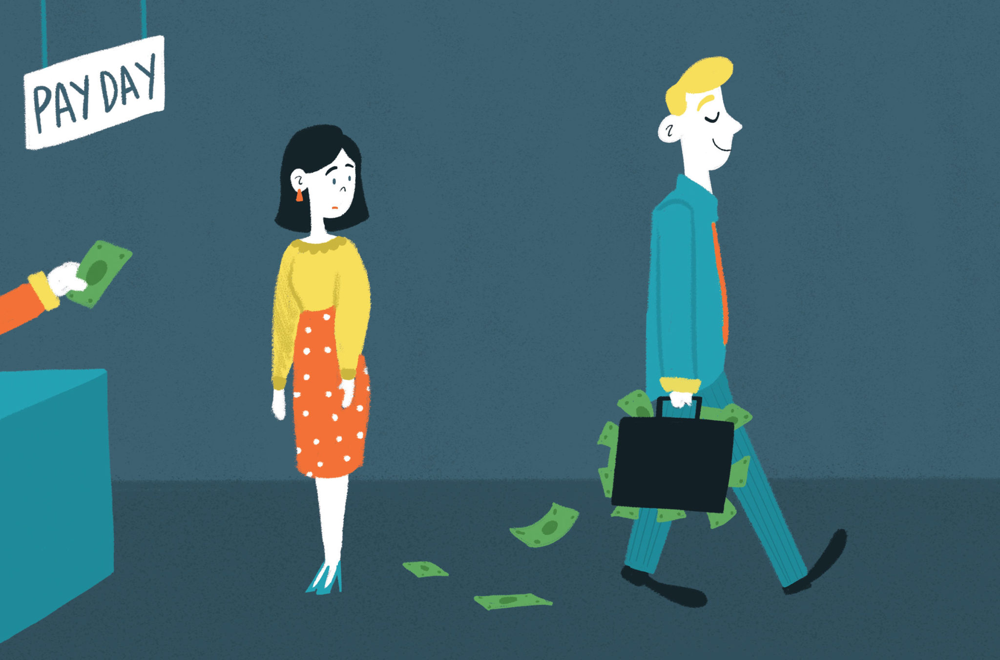

The gender pay gap is the difference in the median earnings of men and women for the same amount of work. An average Indian woman gets paid 19% less than an average Indian man. According to the Gender Gap Index, which surveyed over 153 countries, India has slipped to the 112th position in 2020 from the 108th position in 2018. The widening gender gap is not just a huge concern but a reminder to introspect how much we as a society are doing to bridge it.
This disparity increases with a higher skill level and as you move up the corporate ladder, with it being the highest at the CXO level. *In the FY 2019 the pay gap at the Executive Director role was a whopping 45%, that is, a woman CEO made almost HALF of her male counterpart. This difference increased from a 22% gap in the favour of men in FY 2018.
Some critics claim that this gender pay gap is a myth and if not, then it is simply due to the poor career choices women make but that could not be further from the truth. Some of the reasons why women are making less are:
Globally women comprise just 10% of senior management positions of the Fortune 500 companies. 2 women per 100 economically active men take administrative and managerial positions in India. The underrepresentation of women plays a key role in this pay parity problem. Male executives mostly have higher tenure and faster promotions. Which leads to them retaining the CEO or COO positions for a longer time and higher pay-outs.
For most men, the career driver is to meet financial goals for their families and themselves, whereas for most women it is to self-actualise their talents and dreams. Due to the lack of orientation towards money, statistically, women put in fewer efforts to upskill themselves.
Today the half-life of a job is 5 years and decreasing. 11% of stem-related jobs by women are on the verge of elimination with the changes in digital technologies. Without putting in efforts to reskill themselves to fit the new demands of the industry, women lose out on the promotions if not lose their jobs.
This is one of the factors that is unintentional, but we need to think why only women’s careers are negatively impacted when a family decides to have children. The critics who claim that in this modern world “feminism” isn’t necessary or “equality has been achieved” should know that true equality will be achieved only when women run half the companies and men run half of our homes.
That said, to bridge the gender wage gap we are going to need help from boyfriends, husbands, brothers, and fathers too.
Since the beginning, the behavior of speaking up has not exactly been rewarded in women. Letting your work speak for you is great but in a world like ours, where men advocate for themselves and their work more openly and confidently, women need to step up their game if they want to compete with men for a pay raise or promotions.
When a new job offer with higher pay is presented to working professionals, men with even 40% of the skills required for the job are more likely to apply than a woman who is 80% skilled for the job. Women have to overcome their insecurities and fight for equal pay to create more awareness of gender wage discrimination.With enough not being done the WEF Global Gender Gap report predicts that men and women will have equal pay in not less than 257 years.